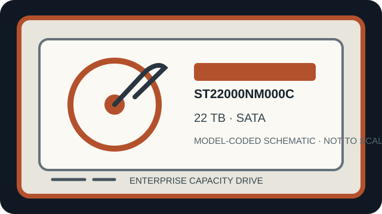

[ IDENTIFIED HDD // SKU-SPECIFIC RECORD ]
Seagate Exos X22 ST22000NM000C
22 TB; 3.5-inch; SATA 6 Gb/s. This SKU-specific record summarizes sector format, performance and workload ratings, recording technology, and host integration. Capacity, sector modes, firmware and security options vary by exact part number; verify the label and manufacturer documentation before deployment.

IDENTIFICATION: Confirm the full manufacturer model/SKU and firmware from the drive label and host inquiry. Do not substitute a nearby capacity or suffix based only on family name or connector fit.
Recorded specifications
| Exact model / SKU | Seagate Exos X22 ST22000NM000C |
|---|---|
| Capacity | 22 TB decimal, manufacturer-rated; formatted capacity is lower. |
| Form factor | 3.5-inch enterprise drive; check tray, carrier, height, mounting, airflow and acoustic/vibration constraints. |
| Interface | SATA 6 Gb/s; link speed negotiates with the host and does not imply support for every SATA feature. |
| Sector format (512e / 4Kn) | 512e default (512-byte logical sectors on 4,096-byte physical sectors); manufacturer FastFormat supports conversion to 4Kn where permitted by the exact model and procedure. Verify host-reported sector mode before use; reformatting may be destructive. |
| Rotation / cache | 7200 rpm; 512 MB cache. |
| Recording technology | CMR (Conventional Magnetic Recording); helium-sealed Exos X22 platform. |
| Workload rating | 550 TB/year rated workload. This is an annualized workload ceiling, not a throughput or duty-cycle guarantee. |
| Reliability caveat | 2.5 million-hour MTBF, 0.35% AFR and the specified unrecoverable-read-error limit are population-level statistical ratings, not service-life or individual-drive guarantees. |
| Host compatibility | Requires a SATA-capable port/backplane and suitable power; a SAS connector does not by itself establish SATA-device support. Confirm HBA/RAID firmware and qualification, 3.5-inch bay clearance, spin-up power, cooling, vibration handling, GPT/OS support above 2 TB and sector-mode alignment. Hardware RAID and expander behavior are system-specific. |
Workload and integration notes
- Use only with a documented SATA-compatible controller/backplane; verify controller support for this exact model, capacity, sector mode and drive firmware.
- Check host-reported logical and physical sector sizes before provisioning. Ensure OS, HBA, RAID metadata, filesystem and recovery tools agree; sector-mode changes can invalidate access to existing data.
- Annual workload and population reliability ratings are not guarantees. Maintain independent backups, monitor drive telemetry, and validate rebuild time, vibration, temperature, power cycling and write workload in the target enclosure.
- If a drive contains data and is failing, avoid formatting, writes, repeated power cycles or stress tests. Preserve exact label/SKU and firmware details and seek qualified recovery assistance when data matters.
Manufacturer sources
- Official Seagate Exos X22 SATA support and manual downloadsManufacturer model and interface reference; consult its exact-model sector-format and installation instructions.
- Seagate Exos X22 manufacturer data sheetManufacturer family specification for capacity, interface, performance, workload and reliability; verify the ST22000NM000C row.
Confirm the exact label, firmware, sector mode, HBA compatibility and revision of manufacturer documentation before procurement or use.